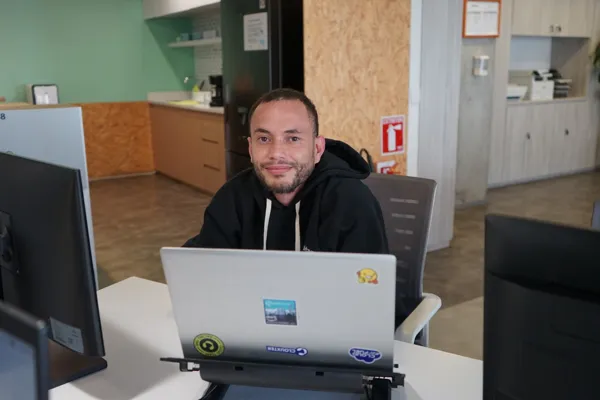

Full Stack Developer | Cloud & DevOps
Diseño y construyo aplicaciones web robustas desde el frontend hasta la base de datos, implementando arquitecturas nativas en la nube eficientes, seguras y altamente escalables.
andres@monolith-to-microservices:~$ terraform apply --auto-approve
aws_vpc.main: Creating... [1/3]
✔ vpc-03487c9f28d73b (10.0.0.0/16) created successfully.
aws_ecs_cluster.production: Creating... [2/3]
✔ cluster-ecs-production created. Status: ACTIVE.
aws_route53_record.app: Provisioning DNS entries...
Apply complete! Resources: 12 added, 0 changed, 0 destroyed.
Outputs: api_gateway_endpoint = "https://api.v2.andresmonk.dev"
> Sobre mí
Con más de 5 años de trayectoria desarrollando aplicaciones web complejas, he consolidado una base técnica sólida en el frontend y backend. Mi pasión por optimizar el rendimiento, asegurar la disponibilidad y automatizar procesos me ha llevado de manera natural a especializarme en Cloud Computing y DevOps.
Actualmente enfoco mi crecimiento profesional en el rol de Solutions Architect, integrando infraestructura como código (IaC), contenedores y pipelines de CI/CD para diseñar plataformas que no solo resuelvan necesidades inmediatas, sino que escalen eficientemente hacia el futuro.

> Stack tecnológico
Mi ecosistema de trabajo se divide en el desarrollo full stack refinado y la arquitectura de infraestructura nativa en la nube.
> Proyectos
> Contacto
Si estás buscando un perfil híbrido capaz de programar software robusto y orquestar despliegues automatizados, hablemos.